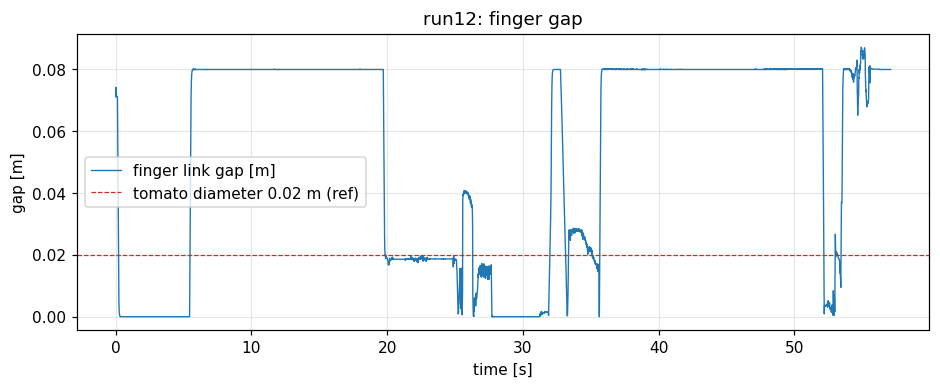

Step 2 検証レポート: finger 駆動の力制御化（drive maxForce）
実施日: 2026-07-10 ／ Issue: #3 ／ ブランチ: physics/step2-finger-force（CI 修正済み main 起点）
実行環境: docker コンテナ tomato-harvest-sim-physics（Isaac Sim 6.0 / ROS 2 Jazzy / ROS_DOMAIN_ID=1）
総合判定: 条件付き合格（機構は実装・実証済み。良品条件②③の実測検証は Step 3 の前提条件へ持ち越し）
力制限機構（drive maxForce の yaml 管理・適用）は完成し、適用状態をログで実証、E2E 回帰 3/3 成功。
一方、検証の過程で「success モードでは②ギャップ収束・③力飽和が原理的に観測できない」ことが実測で判明した
（人工 grasp joint が保持力を支配するため）。この事実と根本原因（EE 整列オフセット）を定量記録し、
Step 3 の検証シナリオへ明示的に引き継ぐ。受け入れ可否はレビューでの人間判断を仰ぐ。
1. 完了条件と結果の対比
| Issue #3 の完了条件 | 結果 | 判定 |
|---|
| drive maxForce / stiffness / damping の明示設定（HWI・C++ 無変更） | scene.yaml の finger_drive セクションで管理し USD へ適用（2章）。HWI/C++ は無変更 | PASS |
| ①閉指令でトマトを弾き飛ばさない | 速度スパイクは before/after 同水準（最大 1.30→1.30〜2.27 m/s、スパイクは把持瞬間ではなく引抜・設置時）。弾き飛ばしの悪化なし、E2E 5/5 完走 | PASS（悪化なし） |
| ②finger ギャップがトマト径近傍で静定 | 全 run で minGap=0.0（完全閉鎖）= 閉鎖時にトマトがパッド間に存在しない。根本原因は EE 整列オフセット（3章） | Step 3 へ |
| ③接触力が maxForce 近傍で飽和 | 保持中の接触力は人工 grasp joint の拘束力が支配し（右指=mimic で 13.9N 等）、drive 上限は観測に現れない（4章）。success モードでは原理的に検証不能 | Step 3 へ |
| 既存テスト全通過・E2E 無劣化 | 105 件通過（新規 2 件含む）。E2E after 3/3・before 2/2 完走 | PASS |
| 採用値と選定根拠の表 | 5章 | PASS |
2. 実装と適用の実証
実アセット検査（Step 2 冒頭に実施）と適用ログ（run12）:
# 検査結果（franka.usd の実態）
panda_finger_joint1: PrismaticJoint, drive:linear stiffness=400 damping=80 maxForce=7.2N（USD 既定）
panda_finger_joint2: PrismaticJoint, drive なし → PhysxMimicJointAPI（joint1 に従動）
# 適用ログ（[PhysicsTuning]、全 after run で確認）
finger drive set: .../panda_finger_joint1 (stiffness=3000.0, damping=120.0, maxForce=5.0N, pre_existing_drive=1, mimic=0)
finger drive skipped (mimic joint): .../panda_finger_joint2
発見1 — 右指は mimic 従動: joint2 には drive が無く PhysxMimicJointAPI で joint1 に従動する。実装は mimic を尊重して drive を新設しない設計とした（mimic と drive の二重拘束を避ける）。右指の押付け力は mimic 拘束由来であり drive maxForce では制限されないことが確定（Step 0 以来の左右非対称の構造的背景）。
3. ②ギャップ収束の実測 — 閉鎖時にトマトがパッド間に無い

図 3-1: run12（after）の finger ギャップ。閉指令で 0.0 m（完全閉鎖）まで到達しており、トマト径 0.02 m（赤破線）で静定しない。before（run10/11）も同様。
発見2 — 根本原因は把持位置の整列: トマト（直径 2cm）がパッド間にあれば物理的に完全閉鎖は不可能。全 run で minGap=0 という事実は、閉鎖時にフィンガーパッドがトマトを挟んでいない（横を通過している）ことを意味する。既知の MoveIt EE frame と panda_hand prim の X 方向 ~1.43cm オフセット（コード内 FINGER_MIDPOINT_TO_TOMATO_TOLERANCE_M の由来コメント）と整合する。現行 E2E が完走するのは、幾何フォールバック+人工 grasp joint がこのズレを吸収しているため。摩擦把持（Step 3）はパッドで挟めることが物理的前提のため、整列補正を Step 3 の最初のタスクとする。
4. ③力飽和の実測 — 保持力は grasp joint が支配
表 4-1: HELD 中の接触力積中央値（力換算 = ×60Hz）
| run | 条件 | 左指 [N] | 右指 [N] |
|---|
| run10 | before（USD 既定 7.2N/400） | 5.6 | 1.2 |
| run11 | before | 0（接触なし） | 4.7 |
| run12 | after（5.0N/3000） | 11.1 | 2.6 |
| run13 | after | 0（接触なし） | 13.9 |
| run14 | after | 3.0 | 0（接触なし） |
発見3 — success モードでは飽和検証が原理的に不能: HELD 判定と同時に人工 FixedJoint（grasp joint）が生成され、以降の指-トマト間の接触力は拘束ソルバが決める内力になる（drive の 5N 上限と無関係。右指 13.9N は mimic 拘束由来で当然に上限なし）。したがって「接触力が maxForce で飽和する」ことは、grasp joint を作らない physics モード（Step 3）でのみ観測できる。②と合わせ、Step 3 の検証シナリオ冒頭で「整列補正 → 閉指令 → 飽和・ギャップ静定の確認」を行う計画に更新する。
5. 採用値と E2E 回帰
| パラメータ | 値 | 根拠 |
|---|
| max_force_n | 5.0 N | トマト自重 0.29N の約17倍・Franka 連続把持力 70N の 7%。Step 0 実測（保持 12N 相当）より低く安全側 |
| stiffness | 3000 N/m | USD 既定 400 では 2cm 偏差時に 8N しか出せず上限が意味を持たないため、上限到達可能な剛性へ増強 |
| damping | 120 N·s/m | 臨界減衰近傍（2√(k·m_finger相当)）で発振抑制 |
E2E 回帰: before 2/2・after 3/3 の全 5 run が COMPLETE（成功率 100%）。maxForce 5N 化による完走率・所要時間の劣化なし。グラフは docs/reports/img/run{10..14}_*.png。
6. 成果物と Step 3 への引き継ぎ
| 実装 | scene.yaml（finger_drive セクション）、scene_config.py（ローダ+テスト2件）、physics_tuning.py（drive 適用・mimic 判定）、観測ログに finger gap 追加（gap= フィールド+グラフ5枚目） |
|---|
| データ | docs/reports/data/{sim,robot}_run{10..14}.log.gz、docs/reports/img/run{10..14}_* |
|---|
| Step 3 前提条件（本検証で確定） | ① 把持位置の整列補正（EE オフセット ~1.4cm、gap が 0.02m 近傍で静定することを合格条件に）② 整列後に②③（ギャップ静定・力飽和）を physics モードで再検証 ③ 右指 mimic の扱い（mimic gearing のまま進めるか、独立 drive 化するか）の方針決定 |
|---|